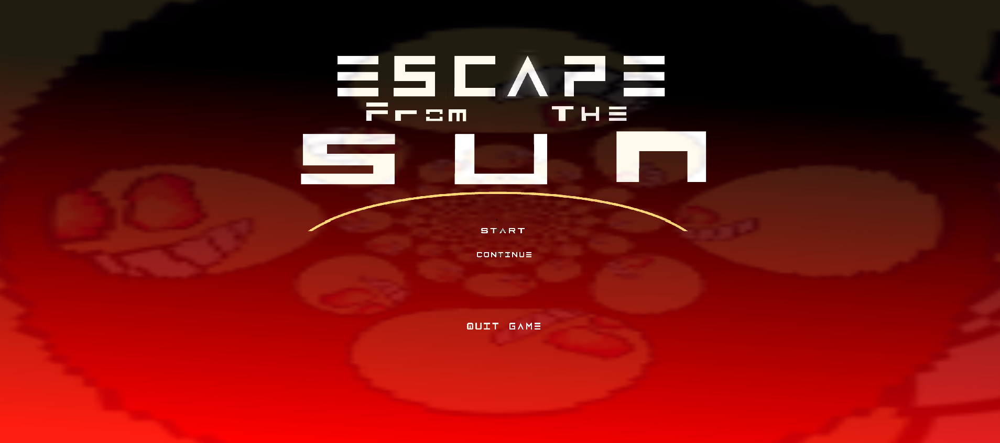

Escape From The Sun Project
Platformer Game released on Steam.
Escape from the Sun was a personal learning experience throughout my early years of learning how programming works, This game started out as a test for a high school project, then as time developed, I thought this game could be something greater, I would often provides updates to the game and whenever I got a new computer with all of my project data wiped, I would just make a new version of the game from scratch. I made about 3-4 prototypes of the same game until I reached to the final conclusive game which got released on Steam in 2023. For more information, this project can be viewed on Steam here: https://store.steampowered.com/app/2303670/Escape_From_The_Sun/
Assignment Timeline Maker
Website to help neurodiverse students complete assignments on time.

The Assignment TImeline Maker had two roles to fulfill, one was to help professor's import their assignments in, have their text be parsed and be given auto generated timeline tasks which then gets put into an auto generated timeline. From there, they can add or delete extra nodes as they see fit and then once they're done making changes, they can download the pdf and the timeline will be saved as an attachment of the original document, the other role for the project was to help neurodiverse students to have a timeline generated for them for each assignment that they can use as a guideline to stay on task, the website would have a way for the students to mark their progress for each task given up until they are finished the assignment. For more information, this project can be viewed on Github here: https://cbcolleg3.github.io/Assignment-Timeline-Maker/
Blue Hen Planner
A new and improved planner for upcoming UD freshmen!
University of Delaware freshman are often left confused on what they need to take for classes, as it's usually by word of mouth and suggestions from the our only advisor we get in the department, so a fun solution was to make a website all about planning for UD, this site allows you to make a plan which can hold multiple semesters and the semesters can hold multiple courses from a list of all UD courses. Included with applying for courses is a list of problems with your plan that can prevent you from graduating, which includes every single UD requirement for your retrospective major. For more information, this project can be viewed on Github here: https://ud-cisc275-s22.github.io/cis-scheduler-team-16/